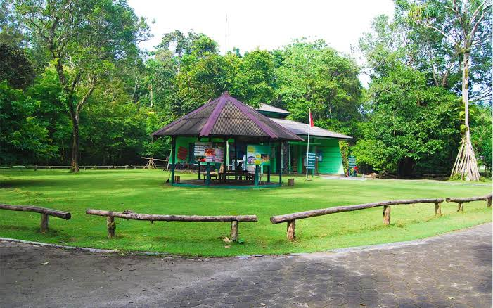
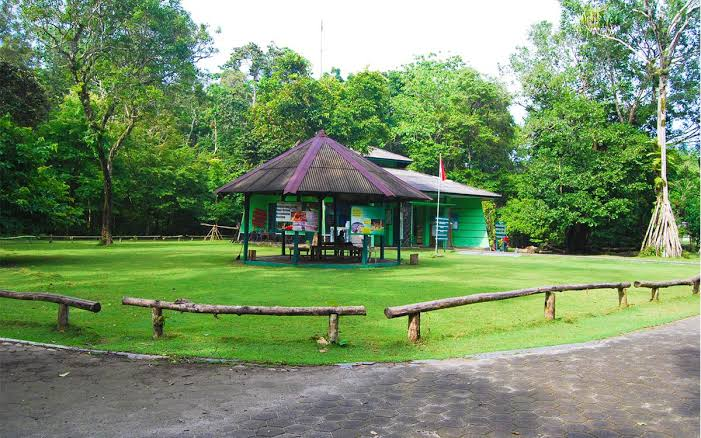

Pantai Barat memiliki ombak yang tidak begitu besar dan hamparan pasir yang luas membentang
di sepanjang sisinya. Oleh karena itu, Pantai Barat merupakan tempat favorit wisatawan untuk
bermain air di tepian pantai, bermain boogie, menikmati keindahan sunset, menyewa
sepeda/motor ATP, surfing atau hanya sekedar melepas lelah sembari meminum es dawegan
(es kepala hijau).
Selain itu, wisata malam di Pantai Barat pun tak kalah menarik. Wisatawan dapat menyewa
odong – odong (red- mobil gowes) untuk berkeliling kawasan wisata. Riuh tawa pecah ketika
wisatawan harus mengayuh ekstra di jalan tanjakan. Tak hanya itu, kerlap – kerlip lampu
odong-odong dan suara musik yang diputar pun semakin memeriahkan suasana wisata malam.
Pantai Barat
Objek wisata yang merupakan primadona pantai di Jawa Barat ini terletak di Desa Pananjung Kecamatan Pangandaran dengan jarak ± 92 km arah selatan kota Ciamis. Dengan adanya faktok-faktor penunjang tadi, maka wisatawan yang datang di Pangandaran dapat melakukan kegiatan yang beraneka ragam: berenang, berperahu pesiar, memancing, keliling dengan sepeda dan lain-lain.
Objek wisata yang merupakan primadona pantai di Jawa Barat ini terletak di Desa Pananjung
Kecamatan Pangandaran dengan jarak ± 92 km arah selatan kota Ciamis, memiliki berbagai
keistimewaan seperti:
• Dapat melihat terbit dan tenggelamnya matahari dari satu tempat yang sama
• Pantainya landai dengan air yang jernih serta jarak antara pasang dan surut relatif lama
sehingga memungkinkan kita untuk berenang dengan aman
• Tersedia tim penyelamat wisata pantai
• Terdapat taman laut dengan ikan-ikan dan kehidupan laut yang mempesona.
Di Pantai Timur wisatawan dapat bermain water
sport seperti banana boat. Di kawasan ini, wisatawan juga dapat menemukan beragam tempat
kuliner seafood dan olahan seafood goreng sebagai buah tangan untuk sanak keluarga atau
sahabat di rumah. Tak hanya itu, di pagi hingga siang hari wisatawan dapat melihat rutinitas
masyarakat nelayan yang mencari ikan dengan menggunakan jaring ered. Sebuah kearifan lokal
yang juga menjadi daya tarik wisata tentunya..
Pantai Timur
Adapun fasilitas umum di Pantai Timur sangat memadai, seperti lapangan parkir yang luas, berbagai hotel, penginapan, pondok wisata dan juga restoran tersedia dengan berbagai tarif. Tak hanya itu, ada pelayanan pos, tempat penukaran uang dan pusat informasi wisata yang lengkap. Untuk pengunjung yang ingin berkemah pun tersedia lokasinya. Ingin menantang adrenalin? Selain snorkeling ada berbagai wahana permainan air (water sport) seperti UNO, donut boat dan tentu saja banana boat.


Pantai Pasir Putih Pangandaran adalah satu dari sekian banyak tempat wisata di Pangandaran, yang sangat populer, dan hits di kalangan wisatawan. Pantai Pasir Putih Pangandaran menawarkan pesona keindahan alam, yang berpadu dengan hamparan pasir putih. Selain itu, masih satu kawasan dengan Taman Wisata Dan Cagar Alam, serta wisata Pantai Pangandaran, sebagai gerbang awalnya.
Rute menuju Pantai Pasir Putih Pangandaran yakni hanya sekitar 10 menit saja jika kamu berangkat dari pusat kabupaen Pangandaran. Dengan menuju Jl. Kidang Pananjung. Cara ke Pantai Pasir Putih Pangandaran akan melalu gerbang utamanya yaitu Pantai Pangandaran, sebagai pantai yang populer di kalangan wisatawan. Selanjutnya, para pengunjung dapat memilih melalui jalur darat maupun jalur laut. Karena dapat dituju melalui dua cara, membuat harga tiketnya pun berbeda. Yakni:
Harga tiket masuk melalui Cagar Alam Pangandaran sebesar Rp. 20.000,-
Harga tiket masuk melalui jalur laut sebesar Rp. 18.000,-
Pasir Putih
Jam operasional Pantai Pasir Putih Pangandaran dibuka setiap hari, mulai pukul 07.00 hingga pukul 17.00. Pantai Pasir Putih, sangat recommended untuk dijadikan destinasi wisata anda bersama keluarga, dengan daya tarik utamanya ialah hamparan pasir putihnya yang lembut.
 

Masih berada satu kawasan dengan Pantai Pangandaran, Taman Wisata Alam (TWA) Cagar Alam
Pangandaran dapat diakses melalui pintu masuk jalur Pantai Barat maupun Pantai Timur
Pangandaran. Di sisi lain, wisatawan juga dapat menyewa perahu dari Pantai Barat
Pangandaran menuju Pantai Pasir Putih Cagar Alam Pangandaran.
Memasuki kawasan Cagar Alam, wisatawan dapat melihat keragama flora fauna seperti Kera Ekor
Panjang, Lutung, Rusa, Kalong, Landak Jawa, Biawak dan Bunga Raflesia. Serta beragam
peninggalan sejarah seperti Situs Batu Kalde, Situs Gua Parat, Situs Batu Meja, Goa Jepang,
Goa Lanang, Goa Panggung dan Pemandian Cirengganis.
Cagar Alam
Taman wisata cagar alam Pantai Pananjung menawarkan pengalaman wisata alam yang menakjubkan, dimana pengunjung bisa melihat hewan liar yang dilestarikan seperti rusa dan juga kera. Taman Wisata Alam dan Cagar Alam Pangandaran, beragam aktivitas petualangan dan pendidikan lingkungan, gua karst, sejarah perang dunia ke 2, sejarah kerajaan dan keragaman flora fauna di Cagar Alam.

Kampung Turis di Pangandaran merupakan area wisata kuliner yang berada tepat di pesisir
Pantai Pangandaran, Jawa Barat. Liburan ke objek wisata Pangandaran tidak hanya menjajal
keindahan alamnya saja. Wisatawan wajib tahu pusat seafood dan hiburan malam ada di Kampung
Turis.
Kampung Turis Pangandaran terletak di Blok Pamugaran, kawasan wisata Pantai Pangandaran,
Jawa Barat semakin menarik perhatian. Dengan deretan kafe dan resto yang eksotis lengkap
dengan spot foto ciamik. Tak hanya itu, tempat yang sangat nyaman dengan berbagai warna
lampu juga hiburan live music menjadikan Kampung Turis Pangandaran ini merupakan tempat
yang pas untuk menikmati pantai di sore dan malam hari.
Kampung Turis
Kampung Turis di Pangandaran merupakan area. Wisata kuliner yang berada tepat di pesisir Pantai Pangandaran, Jawa Barat.Terdapat 12 kafe dan resto yang ada disini, dengan desain bangunan bambu yang eksotis menjadikan siapa saja yang berada disini akan merasa dekat dengan alam. Kampung Turis ini buka mulai pagi sampai malam hari. Jika kalian datang kesini pada akhir pekan, kalian akan disuguhi acara live music sebagai hiburan.